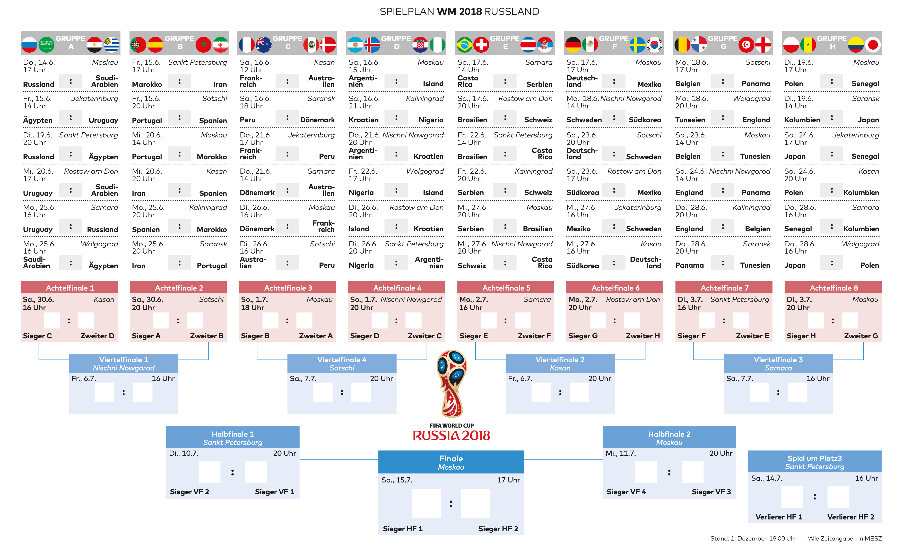
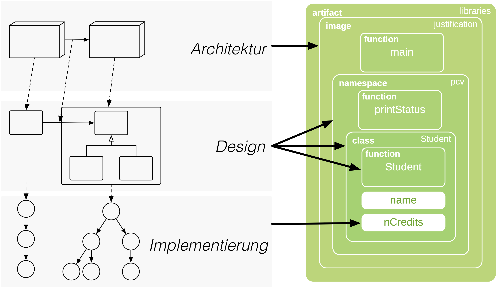
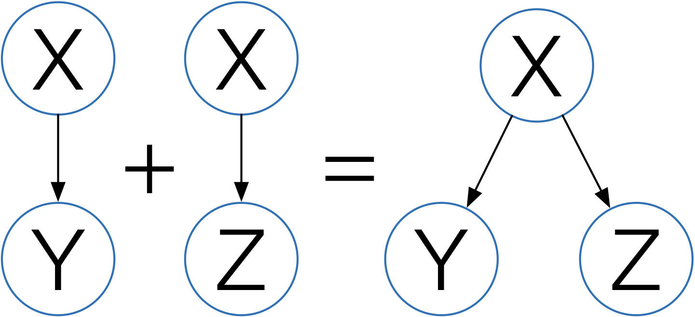

Interaktive Software-Parallelisierung basierend auf hybrider Analyse und Architektur-Rekonstruktion
Andreas Wilhelm, TUMLehrstuhl für Rechnerarchitektur
und Parallele Systeme
Parallelisierung
Industrielle Software-Systeme

https://www.siemens.com
Die (Hardware) Komplexität steigt
Die (Software) Komplexität steigt

Parallelisierung erfordert Abstraktion
Werkzeuge
Werkzeuge zur Erkennung von Parallelität

 Effektiv für "reguläre" Parallelität
Effektiv für "reguläre" Parallelität Kein Fokus auf Software-Architektur
Kein Fokus auf Software-Architektur
Werkzeuge zur Architektur-Rekonstruktion
 Analyse struktureller AbhängigkeitenKein Fokus auf Parallelität
Analyse struktureller AbhängigkeitenKein Fokus auf Parallelität
Parallelisierung erfordert Verständnis
Die Welt ist parallel
Szenario-basierte Parallelisierung
- Szenarien für Parallelisierung identifizieren

- Software Restrukturieren

- Software Parallelisieren

- Software Validieren


Parallelisierung mit Parceive
- Szenarien identifizieren
- Restrukturieren
- Parallelisieren
- Verifizieren
Software-Analyse mit Parceive

Software-Analyse mit Parceive

Demo: WMSim

Software-Analyse mit von Parceive

Veschiedene Abstraktionsebenen

Architektur-Regeln: Bibliotheken
libraries = image("libs/.*")
Verschiedene Abstraktionsebenen

Demo: WMSim
Parallelisierung per Task-Graph

Parceive bietet einiges mehr...
Filter
exclude (libs, inFile("*_generated_*")) # static filter
enable (logic) # dynamic filter
Analyse paralleler Software
Zusammenfassung
Wissenschaftliche Beiträge
Werkzeug für interaktiven Parallelisierung Parceive: Interactive Parallelization Based on Dynamic Analysis.Andreas Wilhelm, Bharatkumar Sharma, Ranajoy Malakar, Tobias Schüle and Michael Gerndt.
IEEE SANER, 2015
Meta-Model für hybride Analysen Parceive: Interactive Parallelization Based on Dynamic Analysis.
Andreas Wilhelm, Bharatkumar Sharma, Ranajoy Malakar, Tobias Schüle and Michael Gerndt.
IEEE SANER, 2015
Framework für dynamische Visualisierung A Visualization Framework for Parallelization.
Andreas Wilhelm, Victor Savu, Efe Amadasun, Michael Gerndt and Tobias Schuele.
IEEE VISSOFT, 2016
Methode für Software-Architektur-Rekonstruktion Tool-based Interactive Software Parallelization: A Case Study.
Andreas Wilhelm, Faris Čakarić, Michael Gerndt and Tobias Schüle.
ACM/IEEE ICSE, 2018
Evaluation anhand von zwei Anwendungen Interactive Software Parallelization based on Hybrid Analysis and Software Architecture Reconstruction
Andreas Wilhelm
PhD Thesis, 2019
Möglichkeiten für weitere Arbeiten
Mehr AutomatisierungAggregation von Analysen

Unterstützung verteilter Anwendungen
Nächstes Ziel: Open-Source